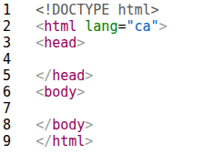
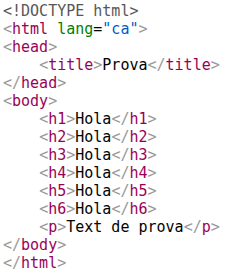
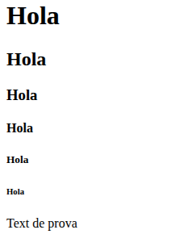

Un document HTML es basa en una estructura de etiquetes que defineixen les diferentes parts d'una pàgina.
Cada pàgina HTML segueix una estructura similar. Primer, es comença amb el < ! DOCTYPE >, seguit de les etiquetes < html >, < head >, < body >.

A HTML, tenim diferentes i més comunes etiquetes. L'etiqueta < title > és el que defineix el títol que apareix a la pestanya del navegador o als resultats dels cercadors.
En quant al text, tenim les etiquetes < h1 > a < h6 > que son utilitzats per definir títols i subtítols a la pàgina web, i < p > que s'utilitza per definir blocs de text o paràgrafs
|
 |
 |
Els atributs en HTML són elements que afegeixen informació extra a les etiquetes HTML per modificar-ne el comportament o l'aparença.
Aquests atributs sempre es col·loquen dins de l'etiqueta d'obertura i segueixen el format de nom="valor"